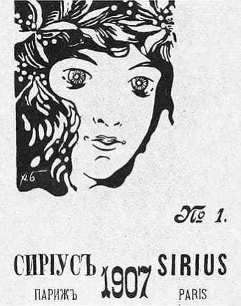
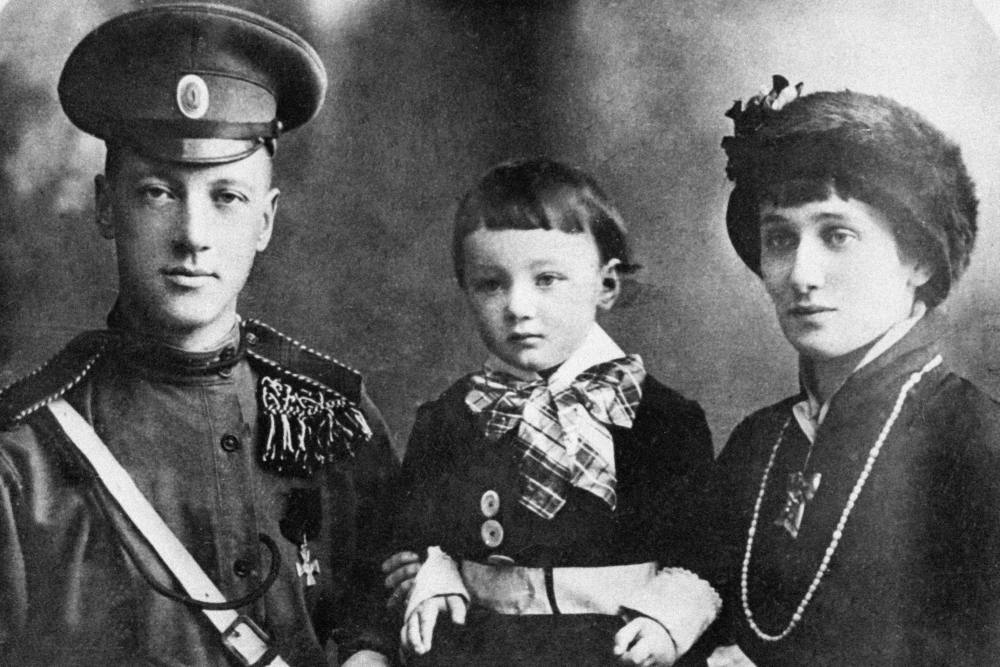
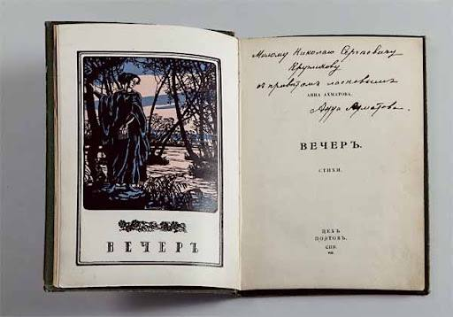
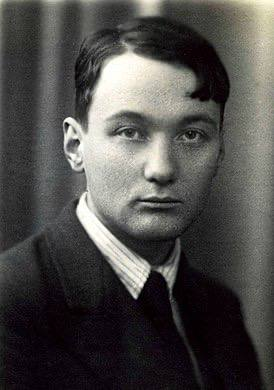
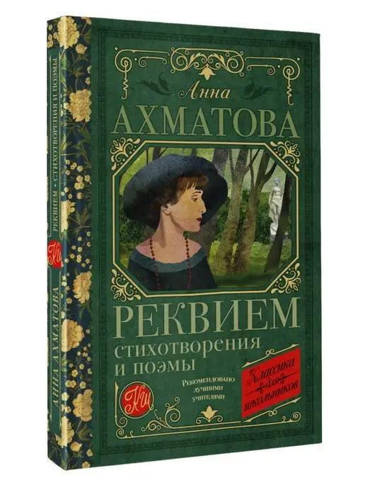
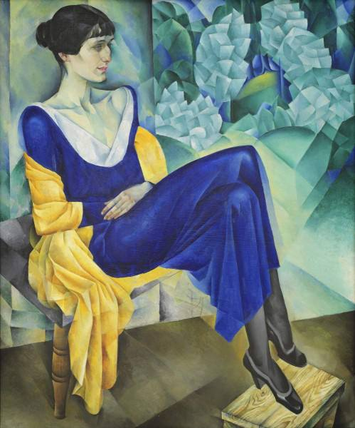

• В 1907 году опубликовано первое стихотворение в журнале "Сириус".
В Киеве Анна начала переписываться с Николаем Гумилевым, который ухаживал за ней еще в Царском Селе. В это время поэт находился во Франции и издавал парижский русский еженедельник «Сириус».



В апреле 1910 года Анна Ахматова и Николай Гумилев обвенчались — под Киевом, в селе Никольская Слободка. В начале своего творчества она пошла путем акмеизма. В 1912 году вышел первый сборник стихотворений Ахматовой «Вечер» — литературная петербургская публика восприняла его с большим интересом. В этом же году поэтесса родила сына Льва Гумилева — будущего ученого.


В 30-е годы дважды арестован Лев Гумилев. В 1938 году его приговорили к пяти годам исправительно-трудовых лагерей. Ахматова позже написала одно из своих знаменитых произведений — автобиографическую поэму «Реквием». Лев Гумилев, который после отбытия наказания добровольцем пошел на фронт и дошел до Берлина, снова был арестован.Все его годы заключения Ахматова пыталась добиться освобождения сына, однако Льва Гумилева выпустили на свободу только в 1956 году.

В 1960-е годы творчество Ахматовой получило широкое признание — поэтесса стала номинантом на Нобелевскую премию, получила литературную премию «Этна-Таормина» в Италии. Оксфордский университет присвоил Ахматовой степень почетного доктора литературы.В мае 1964 года в Музее Маяковского в Москве прошел вечер, посвященный 75-летию поэтессы.

Были возведены памятники и именные доски в разных городах России, ее именем называли улицы, суда, парки и библиотеки.
Музей Ахматовой появился в Санкт-Петербурге, на улице Автовской. Еще один открыли в Фонтанном доме, где она прожила 30 лет. Позже памятные знаки и барельефы появились в Москве, Ташкенте, Киеве, Одессе и многих других городах, где жила поэтесса.